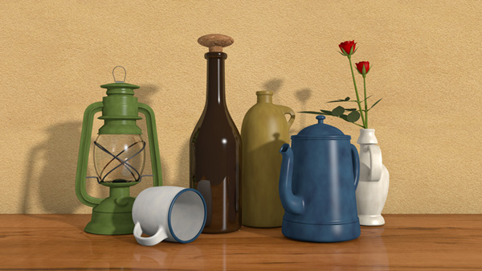
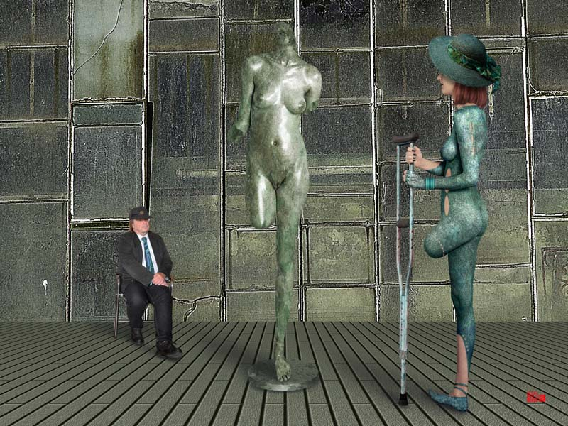
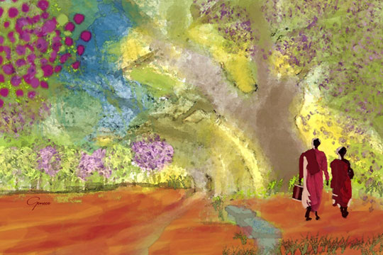
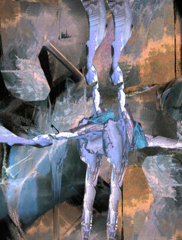
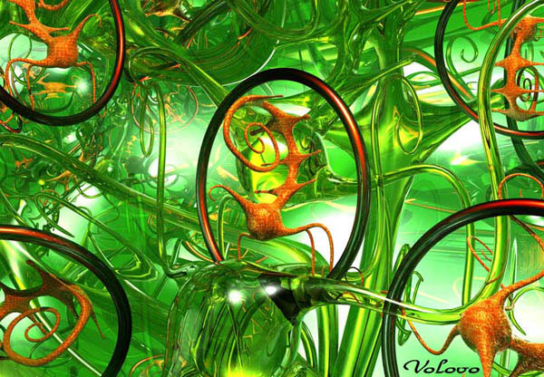
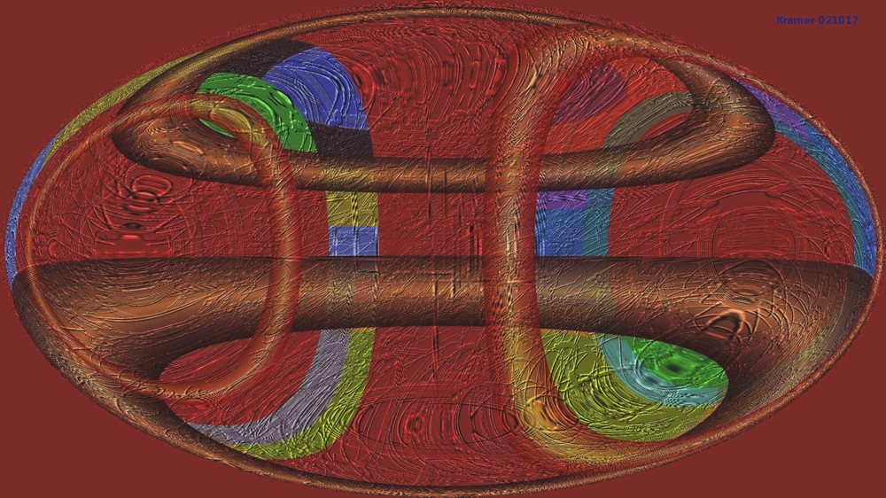
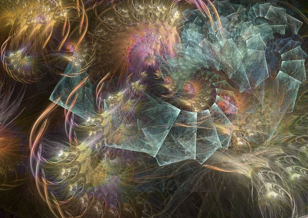
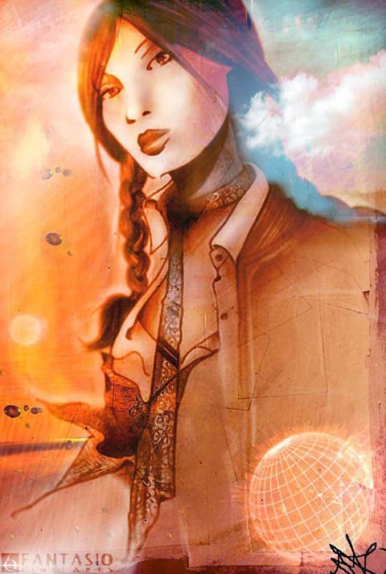
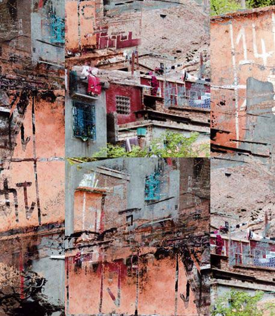

IMAGES OF THE DAY 56
01/01/2023 - 01/10/2023

3D Still Life
Still Life 01
by Umberto Oldani
01/01/2023
Click image to access artist's full exhibit
Camera Works and Art 
No. B_90
by Wolfgang Watzl
01/02/2023
Click image to access artist's full exhibit
Sacred Places 
Cultivating Thought
by Genece Hamby
01/03/2023
Click image to access artist's full exhibit
Metaphysical Theory in Collage 
#DBBC
by Howard Brink
01/04/2023
Click image to access artist's full exhibit
Abstract/Fantasy 
Jungle Virus
by Volovo
01/05/2023
Click image to access artist's full exhibit
Digital Collage
Seria Minos
by Rocha Maia (filho)
01/06/2023
Click image to access artist's full exhibit

Juxtaposting Shapes and Colors 
No. 619f
by David Kramer
01/07/2023
Click image to access artist's full exhibit
Flames and Fractal Algorithms 
Nigipaly
by Fractalia
01/08/2023
Click image to access artist's full exhibit
Fantasio 
Asian Flower
by Oliver Wetter
01/09/2023
Click image to access artist's full exhibit
Transmuted Photography 
Morocco IIB.8
by Thomas Bijon
01/10/2023
Click image to access artist's full exhibit
BACK TO IMAGES OF THE DAY 55
NEXT